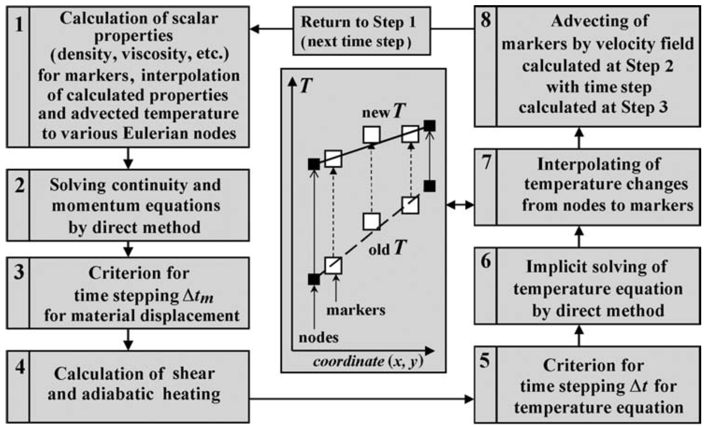

Putting it all together¶
In the past three days we have been introduced to a number of topics related to geodynamic modelling:
Physical processes
Solving equations
Programming concepts
Numerical methods
Benchmarking numerical solutions
Now we turn to how these different topics are related to one another in the design of a modern 3D thermomechanical numerical geodynamic model. As you will see, there are a number of different factors we must consider in the model design, and the order in which we perform various actions is important.
Processes to consider¶
The essential dynamics of a geodynamic model comprise (1) deformation in the model as a result of the applied boundary conditions, pressures in the fluid, and buoyancy, and (2) the transfer of heat by various processes strongly linked to the material flow field. We have already seen parts of many of these processes, but now we need consider the details of each and how they relate. We can see some key processes and their components below.
Heat transfer in 3D
Conduction
Production
Advection
Material thermal properties
Thermal conductivity
Concentration of heat-producing elements
Heat capacity
Stokes flow
Momentum and continuity equations
Material mechanical properties
Viscosity
Material advection (related to of Stokes flow)
Interactions between processes/materials¶
How might various processes we consider above interact with one another? This is an important consideration because we need to know in which order we should handle the different processes. In the Earth, materials move and transfer heat simultaneously, but in our model we will solve the Stokes flow and heat transfer equations separately.
Stokes flow solution will affect advection in the heat transfer calculations
Temperature will affect viscosity of model materials, influencing in turn how the material deforms
Velocities from Stokes flow will influence size of time step for material advection
General structure of a thermomechanical code¶
With the list of processes and their interactions given above, how should we design our numerical modelling code? In what order should we do the different steps?

Figure 1. An example of a flow chart for the steps needed to simulate geodynamic processes in 2D from Gerya (2010).
Above we see an example of the order in which various processes and numerical procedures should be executed. Notably, we calculate the velocities for Stokes flow first, temperature after that (using the Stokes flow velocities), and move the markers after the new temperature values have been interpolated onto them.